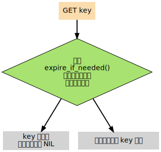

数据库
Table of Contents
接下来对 Redis 数据库的构造和实现进行讨论
除了说明数据库是如何储存数据对象之外，还会讨论键的过期信息是如何保存，而 Redis 又是如何删除过期键的
数据库结构
Redis 中的每个数据库，都由一个 redis.h/redisDb 结构表示：
typedef struct redisDb { int id; // 保存着数据库以整数表示的号码 dict *dict; // 保存着数据库中的所有键值对数据，这个属性也被称为键空间（key space） dict *expires; // 保存着键的过期信息 // 实现列表阻塞原语，如 BLPOP，在列表类型一章有详细的讨论 dict *blocking_keys; dict *ready_keys; // 用于实现 WATCH 命令，在事务章节有详细的讨论 dict *watched_keys; } redisDb;
下面将详细讨论 id , dict 和 expires 三个属性， 以及针对这三个属性所执行的数据库操作
数据库的切换
redisDb 结构的 id 域保存着 数据库的号码
这个号码很容易让人将它和切换数据库的 SELECT 命令联系在一起 但是， 实际上， id 属性并不是用来实现 SELECT 命令， 而是给 Redis 内部程序使用的
当 Redis 服务器初始化时， 它会创建出 redis.h/REDIS_DEFAULT_DBNUM 个 数据库 ， 并将所有数据库 保存 到 redis.h/redisServer.db 数组 中， 每个数据库的 id 为从 \(0\) 到 REDIS_DEFAULT_DBNUM - 1 的值
- 当执行 SELECT number 命令时，程序直接使用 redisServer.db[number] 来切换数据库
但是， 一些内部程序， 比如 AOF 程序、复制程序和 RDB 程序， 需要知道当前数据库的号码 如果没有 id 域的话， 程序就只能在当前使用的数据库的指针， 和 redisServer.db 数组中所有数据库的指针进行对比 以此来弄清楚自己正在使用的是那个数据库
以下伪代码描述了这个对比过程：
def PSEUDO_GET_CURRENT_DB_NUMBER(current_db_pointer): i = 0 for db_pointer in redisServer.db: if db_pointer == current_db_pointer: break i += 1 return i
有了 id 域的话， 程序就可以通过读取 id 域来了解自己正在使用的是哪个数据库， 这样就不用对比指针那么麻烦了
数据库键空间
因为 Redis 是一个 键值对数据库 key-value pairs database ， 所以它的数据库本身也是一个 字典 （俗称 key space ）：
- 字典的 键 是一个 字符串 对象
- 字典的 值 则可以是包括 字符串 ， 列表 ， 哈希表 ， 集合 或 有序集 在内的任意一种 Redis 类型对象
在 redisDb 结构的 dict 属性 中，保存着数据库的所有 键值对数据 。下图展示了一个包含 number 、 book 、 message 三个键的数据库：

number 键是一个列表，列表中包含三个整数值 book 键是一个哈希表，表中包含三个键值对 而 message 键则指向另一个字符串
键空间的操作
因为数据库本身是一个字典， 所以对数据库的操作基本上都是对字典的操作， 加上以下一些 维护 操作：
- 更新 键的 命中率 和 不命中率 ，这个值可以用 INFO 命令查看
- 更新 键的 LRU 时间 ，这个值可以用 OBJECT 命令来查看
- 删除 过期键 （稍后会详细说明）
- 如果键被 修改 了的话，那么将键设为 脏 （用于事务监视），并将服务器设为 脏 （等待 RDB 保存）
- 将对键的修改发送到 AOF 文件 和 附属节点 ，保持 数据库状态的一致
作为例子，以下会展示键的 添加 、 删除 、 更新 、 取值 等几个主要操作
添加
添加一个新键对到数据库， 实际上就是将一个 新的键值对 添加 到 键空间字典 中
- 其中键为字符串对象
- 而值则是任意一种 Redis 类型值对象
举个例子，如果数据库的目前状态如下图所示（和前面展示的数据库状态图一样）：
那么在客户端执行 SET date 2013.2.1 命令之后，数据库更新为下图状态：
删除
删除数据库中的一个键， 实际上就是 删除 字典空间 中对应的 键对象 和 值对象 。举个例子，如果数据库的目前状态如下图所示（和前面展示的数据库状态图一样）：
那么在客户端执行 DEL message 命令之后，数据库更新为下图状态：

更新
当对一个已存在于数据库的键执行更新操作时， 数据库 释放 键 原来的值对象 ， 然后将指针 指向 新的值对象 。举个例子，如果数据库的目前状态如下图所示（和前面展示的数据库状态图一样）：
那么在客户端执行 SET message "blah blah" 命令之后，数据库更新为下图状态：

查询
在数据库中取值实际上就是在 字典空间 中 取值 ， 再加上一些 额外的 类型检查 ：
- 键 *不存在*，返回 空回复
- 键 存在 ，且 类型正确 ，按照通讯协议返回 值对象
- 键 存在 ，但 类型不正确 ，返回 类型错误
举个例子，如果数据库的目前状态如下图所示（和前面展示的数据库状态图一样）
当客户端执行 GET message 时，服务器返回 "hello moto" 当客户端执行 GET not-exists-key 时，服务器返回空回复 当服务器执行 GET book 时，服务器返回类型错误
其他
除了上面展示的键值操作之外，还有很多针对数据库本身的命令，也是通过对键空间进行处理来完成的：
- FLUSHDB 命令：删除键空间中的所有键值对
- RANDOMKEY 命令：从键空间中随机返回一个键
- DBSIZE 命令：返回键空间中键值对的数量
- EXISTS 命令：检查给定键是否存在于键空间中
- RENAME 命令：在键空间中，对给定键进行改名
- 。。。。。。
键过期
在前面的内容中， 讨论了很多涉及数据库本身、以及对数据库中的键值对进行处理的操作 但是， 关于数据库如何保存键的过期时间， 以及如何处理过期键这一问题， 还没有讨论到
通过 EXPIRE , PEXPIRE , EXPIREAT 和 PEXPIREAT 四个命令， 客户端可以给某个 存在的 键 设置 过期时间 ， 当键的过期时间到达时， 键就不再可用：
redis> SETEX key 5 value OK redis> GET key "value" redis> GET key // 5 秒过后 (nil)
命令 TTL 和 PTTL 则用于返回给定键距离过期还有 多长时间 ：
redis> SETEX key 10086 value OK redis> TTL key (integer) 10082 redis> PTTL key (integer) 10068998
过期时间的保存
在数据库中， 所有键的过期时间都被保存在 redisDb 结构的 expires 字典里：
typedef struct redisDb { // ... dict *expires; // ... } redisDb;
expires 字典 ：的
- 键：一个指向 dict 字典 （键空间）里 某个键的指针
- 值：键所指向的数据库键的 到期时间 ， 这个值以 long long 类型表示
下图展示了一个含有三个键的数据库，其中 number 和 book 两个键带有过期时间：

为了展示的方便， 图中重复出现了两次 number 键和 book 键 在实际中， 键空间字典的键和过期时间字典的键都指向同一个字符串对象， 所以不会浪费任何空间
设置生存时间
Redis 有四个命令可以设置键的生存时间（可以存活多久）和过期时间（什么时候到期）：
- EXPIRE: 以 秒 为单位设置键的 生存时间
- PEXPIRE 以 毫秒 为单位设置键的 生存时间
- EXPIREAT 以 秒 为单位，设置键的 过期 UNIX 时间戳
- PEXPIREAT 以 毫秒 为单位，设置键的 过期 UNIX 时间戳
虽然有那么多种不同单位和不同形式的设置方式， 但是 expires 字典的值只保存 以毫秒为单位的过期 UNIX 时间戳
这就是说， 通过进行转换， 所有命令的效果最后都和 PEXPIREAT 命令的效果一样
举个例子，从 EXPIRE 命令到 PEXPIREAT 命令的转换可以用伪代码表示如下：
def EXPIRE(key, sec): ms = sec_to_ms(sec) # 将 TTL 从秒转换为毫秒 ts_in_ms = get_current_unix_timestamp_in_ms() # 获取以毫秒计算的当前 UNIX 时间戳 PEXPIREAT(ms + ts_in_ms, key) # 毫秒 TTL 加上毫秒时间戳，就是 key 到期的时间戳
其他函数的转换方式也是类似的
作为例子， 下图展示了一个 expires 字典示例， 字典中 number 键的过期时间是 2013 年 2 月 10 日 （农历新年）， 而 book 键的过期时间则是 2013 年 2 月 14 日 （情人节）：
这两个键的过期时间可能是用以上四个命令的任意一个设置的， 但它们都以统一的格式被保存在 expires 字典中
过期键的判定
通过 expires 字典， 可以用以下步骤检查某个键是否过期：
- 检查键是否 存在 于 expires 字典：如果存在，那么 取出 键的 过期时间
- 检查 当前 UNIX 时间戳 是否 大于 键的过期时间 ：
- 如果是的话，那么键 已经过期
- 否则，键未过期
可以用伪代码来描述这一过程：
def is_expired(key): key_expire_time = expires.get(key) # 取出键的过期时间 # 如果过期时间不为空，并且当前时间戳大于过期时间，那么键已经过期 if expire_time is not None and current_timestamp() > key_expire_time: return True return False # 否则，键未过期或没有设置过期时间
过期键的清除
已经知道了过期时间保存在 expires 字典里， 又知道了该如何判定一个键是否过期 现在剩下的问题是， 如果一个键是过期的， 那它什么时候会被删除？
这个问题有三种可能的答案：
- 定时 删除：在设置键的过期时间时，创建一个定时事件，当过期时间到达时，由事件处理器自动执行键的删除操作
- 惰性 删除：放任键过期不管，但是在每次从 dict 字典中取出键值时，要检查键是否过期，如果过期的话，就删除它，并返回空；如果没过期，就返回键值
- 定期 删除：每隔一段时间，对 expires 字典进行检查，删除里面的过期键
定时删除
- 定时删除策略对 内存 是最友好的： 因为它保证过期键会在第一时间被删除， 过期键所消耗的内存会立即被释放
- 这种策略的缺点是：
它对 CPU 时间是最不友好的： 因为删除操作可能会占用大量的 CPU 时间
在内存不紧张、但是 CPU 时间非常紧张的时候 （比如说，进行交集计算或排序的时候） 将 CPU 时间花在删除那些和当前任务无关的过期键上， 这种做法毫无疑问会是低效的
目前 Redis 事件处理器对时间事件的实现方式 无序链表 ， 查找一个时间复杂度为 \(O(N)\)
所以 redis 并不适合用来处理大量时间事件
惰性删除
惰性删除对 CPU 时间来说是最友好的 ： 它只会在取出键时进行检查， 这可以保证删除操作只会在非做不可的情况下进行
并且删除的目标仅限于当前处理的键， 这个策略不会在删除其他无关的过期键上花费任何 CPU 时间
- 惰性删除的缺点是， 它对 内存是最不友好 的： 如果一个键已经过期， 而这个键又仍然保留在数据库中， 那么 dict 字典和 expires 字典都需要继续保存这个键的信息， 只要这个过期键不被删除， 它占用的内存就不会被释放
举个例子， 对于一些按时间点来更新的数据， 比如日志（log）， 在某个时间点之后， 对它们的访问就会大大减少 如果大量的这些过期数据积压在数据库里面， 用户以为它们已经过期了（已经被删除了） 但实际上这些键却没有真正的被删除（内存也没有被释放）， 那结果肯定是非常糟糕
在使用惰性删除策略时， 如果数据库中有非常多的过期键， 但这些过期键又正好没有被访问的话， 那么它们就永远也不会被删除（除非用户手动执行）， 这对于性能非常依赖于内存大小的 Redis 来说， 肯定不是一个好消息
定期删除
从上面对定时删除和惰性删除的讨论来看， 这两种删除方式在单一使用时都有明显的缺陷： 定时删除占用太多 CPU 时间， 惰性删除浪费太多内存。
定期删除是这两种策略的一种折中：
- 它每隔一段时间执行一次删除操作，并通过 限制 删除操作执行的时长和频率，籍此来减少删除操作对 CPU 时间的影响
- 另一方面，通过定期删除过期键，它有效地减少了因惰性删除而带来的内存浪费
Redis 使用的策略
Redis 使用的过期键删除策略是 惰性删除 加上 定期删除 ， 这两个策略相互配合，可以很好地在合理利用 CPU 时间和节约内存空间之间取得平衡
过期键的惰性删除策略
实现过期键惰性删除策略的核心是 db.c/expireIfNeeded 函数，所有命令在 读取 或 写入 数据库之前，程序都会调用 expireIfNeeded 对 输入键 进行 检查 ， 并将 过期键 删除 ：
比如说， GET 命令的执行流程可以用下图来表示：

expireIfNeeded 的作用是， 如果输入键已经 过期 的话， 那么将 键 、_键的值_ 、 键保存在 expires 字典中的过期时间 都 删除 掉。用伪代码描述的 expireIfNeeded 定义如下：
def expireIfNeeded(key): if key.is_expired(): # 对过期键执行以下操作 。。。 db.dict.remove(key) # 从键空间中删除键值对 db.expires.remove(key) # 删除键的过期时间 propagateDelKeyToAofAndReplication(key) # 将删除命令传播到 AOF 文件和附属节点
过期键的定期删除策略
对过期键的定期删除由 redis.c/activeExpireCycle 函执行： 这个函数在 规定的时间限制 内， 尽可能地 遍历 各个数据库 的 expires 字典 ， 随机 地检查 一部分键 的 过期时间 ， 并 删除 其中的 过期键 。整个过程可以用伪代码描述如下：
def activeExpireCycle(): for db in server.db: # 遍历数据库（不一定能全部都遍历完，看时间是否足够） i = 0 # MAX_KEY_PER_DB 是一个 DB 最大能处理的 key 个数，它保证时间不会全部用在个别的 DB 上（避免饥饿） while (i < MAX_KEY_PER_DB): if db.is_empty(): break # 数据库为空，跳出 while ，处理下个 DB key_with_ttl = db.expires.get_random_key() # 随机取出一个带 TTL 的键 if is_expired(key_with_ttl): db.deleteExpiredKey(key_with_ttl) # 检查键是否过期，如果是的话，将它删除 if reach_time_limit(): return # 当执行时间到达上限，函数就返回，不再继续，这确保删除操作不会占用太多的 CPU 时间 i += 1
每当 Redis 的例行处理程序 serverCron 执行时， activeExpireCycle 都会被调用
过期键对 AOF 、RDB 和复制的影响
前面的内容讨论了过期键对 CPU 时间和内存的影响 现在，是时候说说过期键在 RDB 文件、 AOF 文件、 AOF 重写以及复制中的影响了
过期键会被保存在更新后的 RDB 文件、 AOF 文件或者重写后的 AOF 文件里面吗？
附属节点会会如何处理过期键？处理的方式和主节点一样吗？
更新后的 RDB 文件
在创建新的 RDB 文件时，程序会对键进行检查， 过期的键 不会被 写入到更新后的 RDB 文件中。
因此，过期键对更新后的 RDB 文件没有影响
AOF 文件
- 在键已经过期，但是还 没有 被 惰性删除 或者 定期删除 之前，这个键不会产生任何影响，AOF 文件也不会因为这个键而被修改
当过期键被惰性删除、或者定期删除之后，程序会向 AOF 文件追加一条 DEL 命令，来 显式 地记录该键已被删除
举个例子， 如果客户端使用 GET message 试图访问 message 键的值， 但 message 已经过期了， 那么服务器执行以下三个动作： 1. 从数据库中删除 message 2. 追加一条 DEL message 命令到 AOF 文件 3. 向客户端返回 NIL
AOF 重写
和 RDB 文件类似， 当进行 AOF 重写时， 程序会对键进行检查， 过期的键 不会 被保存到重写后的 AOF 文件。
因此，过期键对重写后的 AOF 文件没有影响
复制
当服务器带有 附属节点 时， 过期键的删除 由 主节点 统一控制 ：
- 如果服务器是 主节点 ，那么它在删除一个过期键之后，会 显式 地向 所有附属节点 发送一个 DEL 命令
如果服务器是 附属节点 ，那么当它碰到一个过期键的时候，它会向程序 返回 键已过期 的回复，但并不真正的删除过期键
因为程序只根据键是否已经过期、而不是键是否已经被删除来决定执行流程，所以这种处理并不影响命令的正确执行结果 当接到从主节点发来的 DEL 命令之后，附属节点才会真正的将过期键删除掉
附属节点不自主对键进行删除是为了和主节点的数据保持 绝对一致 ， 因此， 当一个过期键还存在于主节点时，这个键在所有附属节点的副本也不会被删除
这种处理机制对那些使用大量附属节点，并且带有大量过期键的应用来说，可能会造成一部分内存不能立即被释放 但是，因为过期键通常很快会被主节点发现并删除，所以这实际上也算不上什么大问题